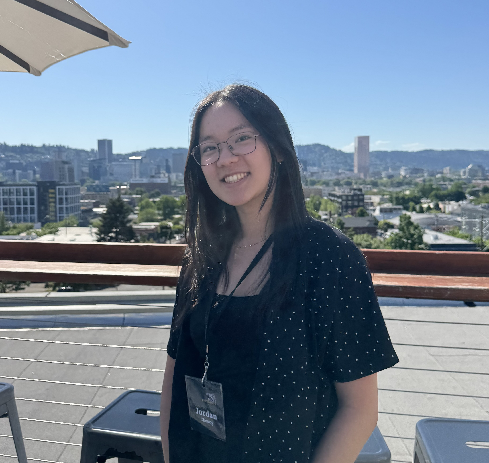

Resumé (Updated 10/5/26)
[_____]-enthusiast
BS, Human Centered Design and Engineering (June 2027)
University of Washington, Seattle
jordanalexacheung@gmail.com
linkedin.com/in/jordanacheung
I am a proud New Jerseyan who came to UW to study HCDE. I’m passionate about documentation and believe that clear, thoughtful information is a powerful form of care.
In my career, I seek to develop content and systems that empower humans to express themselves and find joy with beautiful, innovative, and accessible products.
I am an avid choral singer, graphic novel reader, and rock climber with hundreds of music playlists.
To learn more about my work (or get a song or graphic novel recommendation), reach out via email or LinkedIn :)